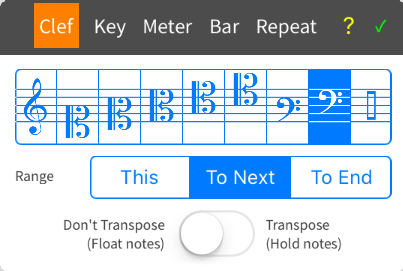
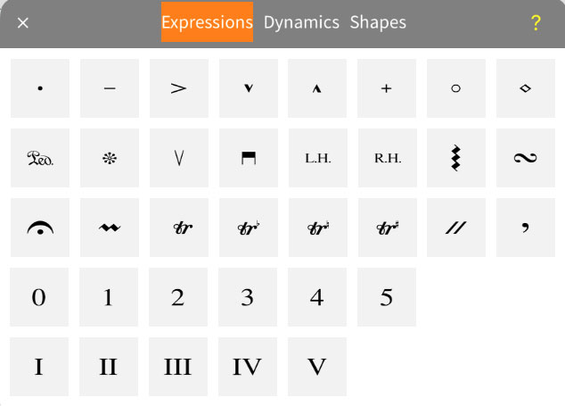

1.  Double tap on the treble clef in the cello part. Select the bass clef then tap
2. Tap anywhere in the first measure within the staff and start to drag up or down. You should see a long green rectangle under your stylus or finger. Release your stylus when you have the pitch you want. A quarter note appears.
Discussion: MusicJOT has two ways to enter music - with the panels and with natural handwriting. The top three buttons at the far right control this. The top two are for entering notes and other symbols and the third is for handwriting. With the top button selected, you can enter new notes or add to notes to make chords by tapping directly in the score.
3. Tap anywhere outside of the staff (in the clear) to deselect the quarter note.
4. Tap and drag up or down directly on the note to change pitch.
5. Tap and drag to the right or left directly on the note to change duration.
6. Tap and drag directly above or below an existing note to add notes to make a chord. If you end up with a new new note either to the left or right of the target note but you were trying to create a chord, you were too far off the vertical center.
7. Tap on the note button (by default a quarter note). Select a different note duration, then repeat the above procedure.
Discussion: The notes panel is actually three panels in one - notes, rests, and note modifying tools. Tap on the top button to cycle through all three.
8.  Close the notes panel by tapping on the back arrow at the bottom. Then tap on the second button (music sysmbols) to select it and tap again to open the music symbols panels. Select the accent mark. Then tap on a note in your score to place the accent with auto-positioning. You can drag the expression to reposition at any time after it is placed.
Result: You have learned how to enter notes, chords and music symbols, and alter pitches and durations. You've also learned that MusicJOT has two basic modes: palette and handwriting.